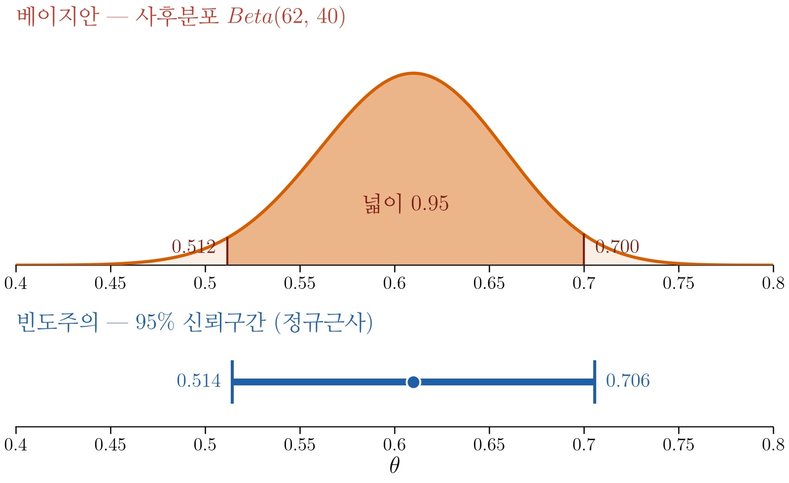

12wk-1: 베이지안식 해석 (3)
1. 강의영상
2. 베이지안식 해석이 가지는 장점
- 베이지안식 해석이 가지는 장점
- 예측이 사후분포 그 자체다.
- 주관적인 직관이 잘 맞으면 예측이 잘 된다.
- 처음 보는 것에 0 을 주지 않는다. (?)
3. 장점1: 예측이 사후분포 그 자체
# 예제1 – \(\theta>0.5\) 일 확률
1이 나올 확률이 \(\theta\) 인 동전을 3번 던져서 \(0,\ 1,\ 0\) 을 얻었다. 참값 \(\theta\) 는 모른다. 이때 “\(\theta>0.5\) 일 확률” 이라는 말이 타당한가? 빈도주의와 베이지안으로 각각 답하라. (베이지안은 \(U(0,1)\)을 사전분포로 이용)
(풀이)
| 빈도주의 | 베이지안 | |
|---|---|---|
| 모형 | \(X_1,X_2,X_3\overset{i.i.d.}{\sim}Ber(\theta)\) | \(\theta\sim U(0,1)\) \(X_1,X_2,X_3\mid\theta\overset{i.i.d.}{\sim}Ber(\theta)\) |
| 모르는 \(\theta\) 를 | 상수로 취급 | 확률변수의 실현값으로 취급 |
| 자료를 본 뒤 얻는 것 | 가능도 \(L(\theta)=\theta(1-\theta)^2\) |
사후분포 \(\pi(\theta\mid\text{data})=12\,\theta(1-\theta)^2\) |
| “\(\theta>0.5\) 일 확률” | 말할 수 없다 (참이거나 거짓) | \(\frac{5}{16}\approx0.31\) |

같은 자료(동전 3번, \(0,\ 1,\ 0\))의 가능도와 사후분포
- 자료를 더 모으면?
자료를 하나씩 더할 때의 가능도와 사후분포 (\(n=3\to100\))
#
- 구간추정: \(\theta\) 를 점 하나가 아니라 구간으로 추정하는 것을 구간추정이라 함.
- 신뢰구간(confidence interval) — 빈도주의의 구간이다. 95% 컨피던스 인터벌은 같은 조사를 \(N\)회 되풀이했을때 대략 \(N \times 0.95\)개정도의 컨피던스 인터벌이 \(\theta\) 를 포함한다는 뜻이다. (???)
- 크레더블 인터벌(credible interval) — 베이지안의 구간이다. 95% 크레더블 인터벌은 \(\theta\) 가 이 구간에 있을 확률이 95%라는 의미 (!!!)
여담: 보통 통계학과 출신은 신뢰구간의 의미를 잘못 이해하는 걸 매우 싫어합니다. 저도 매우 싫어했습니다. (저의 발작버튼이었습니다.) 요즘은 많이 유해졌습니다.
# 예제2 – 95% 구간 (예제1 애니메이션의 마지막 장면을 이어서)
1이 나올 확률이 \(\theta\) 인 동전을 100번 던져서 1 이 61번 나왔다.
\(\theta\) 의 95% 신뢰구간과 95% 크레더블 인터벌을 각각 구하고, 그 구간을 어떻게 읽는지 비교하라. (베이지안은 \(U(0,1)\) 인 사전분포를 이용한다)
(풀이)
| 빈도주의: 95% 신뢰구간 | 베이지안: 95% 크레더블 인터벌 | |
|---|---|---|
| 구하는 법 | 정규근사: \(\hat\theta\pm1.96\sqrt{\frac{\hat\theta(1-\hat\theta)}{n}}\), \(\hat\theta=\frac{61}{100}\) | 사후분포 \(Beta(62,\ 40)\) 의 양 끝에서 넓이 \(0.025\) 씩을 뗀 가운데 구간 |
| 구간 | \([0.514,\ 0.706]\) | \([0.512,\ 0.700]\) |
| “\(\theta\) 가 이 구간에 있을 확률이 0.95” | 틀린 말 | 맞는 말 — \(P(0.512<\theta<0.700\mid\text{data})=0.95\) |
| 95% 의 뜻 | 같은 조사를 되풀이해 구간을 만들면 그중 95% 쯤이 \(\theta\) 를 덮는다 | \(\theta\) 가 이 구간에 있을 확률 |

같은 자료(100번 중 61번)로 만든 두 구간
- 베이지안은 “구간 \([0.512, 0.700]\)에 \(\theta\)가 있을 확률이 95%에요” 라고 주장할 수 있으나, 빈도주의는 “구간 \([0.514,0.706]\)에 \(\theta\)가 있을 확률이 95%에요” 라고 주장할 수 없다.
- 아직 잘 느낌이 오지 않죠? 지금은 100번 동전 던져서 우연히 61번이 나온 상황이잖아요? 그런데 다른 학생들이 던져서는 61번이 안나올수도 있죠? 한 100명이 던졌다고 생각하고 100명의 학생들이 각각 위와 같은 그림들을 그렸다고 상상합시다. (그림A로 강의노트에 넣을지 그림B로 넣을지 고민하다가 둘다 넣습니다. 편한걸로 보세요.)
둘 중 B 가 더 맞는 그림인듯. 사실 베이지안은 95%라는 숫자를 설명하기위해서 \(N\)번의 되풀이가(=\(N\)명의 학생이) 필요하지 않음.
#
4. 장점2: 주관적 사전분포의 위력
# 예제3 – 주관은 언제 이기나
1이 나올 확률이 \(\theta\) 인 동전을 \(n\)번 던져 \(\theta\) 를 추정한다. 베이지안은 “이 동전은 거의 공평하다” 는 직관을 사전분포로 넣어 아래처럼 둔다.
- \(\theta\sim Beta(10,10)\)
- \(X_1,\dots,X_n\mid\theta\overset{i.i.d.}{\sim}Ber(\theta)\)
빈도주의는 \(\hat{\theta}^{F}=\frac{\sum x_i}{n}\) 로, 베이지안은 사후평균 \(\hat{\theta}^{B}=E(\theta\mid\text{data})\) 로 추정한다. 참값 \(\theta\) 와 던진 횟수 \(n\) 에 따라 어느 쪽이 참값에 더 가까운지 비교하라. (참값에 가까운 정도는 \(E\big[(\hat{\theta}-\theta)^2\big]\)로 잰다)
(풀이)
| 참값 \(\theta\) | \(n\) | 빈도주의 | 베이지안 | 이긴 쪽 |
|---|---|---|---|---|
| \(0.5\) (직관이 맞음) | \(5\) | \(0.0500\) | \(0.0020\) | 베이지안 |
| \(20\) | \(0.0125\) | \(0.0031\) | 베이지안 | |
| \(100\) | \(0.0025\) | \(0.0017\) | 베이지안 | |
| \(0.7\) (조금 틀림) | \(5\) | \(0.0420\) | \(0.0273\) | 베이지안 |
| \(20\) | \(0.0105\) | \(0.0126\) | 빈도주의 | |
| \(100\) | \(0.0021\) | \(0.0026\) | 빈도주의 | |
| \(0.9\) (많이 틀림) | \(5\) | \(0.0180\) | \(0.1031\) | 빈도주의 |
| \(20\) | \(0.0045\) | \(0.0411\) | 빈도주의 | |
| \(100\) | \(0.0009\) | \(0.0051\) | 빈도주의 |
- 사전분포 \(Beta(a,b)\) 의 \(a\), \(b\) 를 바꿔 가며 어디서 주관이 이기는지 보자. 처음 값 \(a=b=10\) 이 이 예제의 사전분포다.
- 주관적 프라이어가 효과적인경우(Murphy, 2022, pp. 162, 191).
- 직관이 참값에 가까울 때.
- (직관이 참값에 가깝고) 자료가 적을 때.
#
- 현실적으로 주관적 프라이어를 고려할 수 있는 다양한 경우
상상 예제
| 상황 | 자료 | 사전분포 |
|---|---|---|
| 신인 타자의 타율 | 4타수 4안타 | 리그 타자 타율(대개 .220~.310) |
| 새 식당의 만족률 | 리뷰 3개 모두 만족 | 비슷한 식당들의 만족률 |
| 새 광고의 클릭률 | 노출 200번, 클릭 0번 | 지난 광고들의 클릭률 |
| 새 생산 라인의 불량률 | 50개 중 불량 0개 | 같은 기계 다른 라인의 불량률 |
| 신약의 반응률 | 10명 중 7명 반응 | 같은 계열 약들의 반응률 |
| 신인의 자유투 성공률 | 5번 중 5번 성공 | 리그 선수들의 성공률 |
교재의 예제
- 평평한 판 위에서 돌린 동전의 앞면 확률 — 비슷한 동전을 많이 돌려 본 경험을 사전분포로 둔다(Lehmann & Casella, 1998, pp. 225–226).
- 미국 군(county)별 신장암 사망률 — 인구가 적은 군일수록 극단적인 값이 나오므로, 전국 자료로 만든 사전분포로 누른다(Gelman et al., 2013, p. 47).
- 자동차 보험 가입자의 내년 사고 건수 — 가입자 9461명의 사고 기록이 사전분포 구실을 한다(Efron & Hastie, 2016, p. 76).
- 야구 타자 18명의 타율 — 다른 타자들의 타율이 사전분포 구실을 한다(Efron & Hastie, 2016, p. 95).
5. 장점3: 검은 백조
- 검은 백조 이야기: 옛 서양 사람들은 백조가 모두 희다고 생각했다. 그래서 “검은 백조” 는 있을 수 없는 것을 가리키는 말이었다. 그런데 17세기에 유럽 탐험가들이 오스트레일리아에서 검은 백조를 찾았다(Murphy, 2022, p. 122).
- 최대가능도 추정도 같은 실수를 한다(Murphy, 2022, p. 122). 백조 \(n\)마리가 모두 희면 “검은 백조가 나올 확률” 의 최대가능도 추정값은 \(\frac{0}{n}=0\), 곧 “검은 백조는 없다” 이다.
참고문헌
- Efron, B., & Hastie, T. (2016). Computer Age Statistical Inference: Algorithms, Evidence, and Data Science. Cambridge University Press.
- Gelman, A., Carlin, J. B., Stern, H. S., Dunson, D. B., Vehtari, A., & Rubin, D. B. (2013). Bayesian Data Analysis (3rd ed.). CRC Press.
- Hoff, P. (2013). Minimax estimation [Lecture notes, November 12, 2013].
- Lehmann, E. L., & Casella, G. (1998). Theory of Point Estimation (2nd ed.). Springer.
- Murphy, K. P. (2022). Probabilistic Machine Learning: An Introduction. MIT Press.